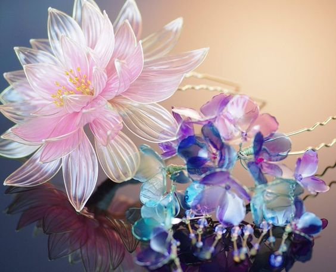
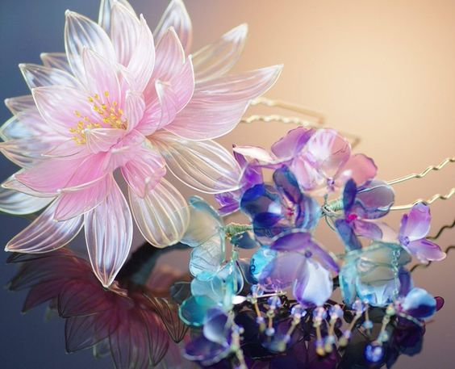

Заколка выполнена из эпоксидной смолы;
Размер:
| материалы | цвет | вид цветка |
| эпоксидная смола, металл, биссер | на выбор | на выбор |
Цветок на заколке создаётся из металлической проволоки, смолы и биссера, прикреплено к шпильке или к гребню(в зависимости от выбранного крепления)